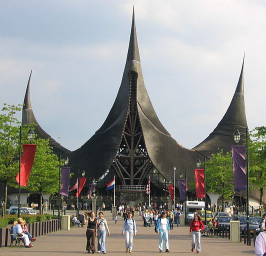

De Efteling is een attractiepark en
recreatiecomplex in Kaatsheuvel, een dorp in de Nederlandse provincie
Noord-Brabant. Naast het attractiepark omvat de hele Wereld van de
Efteling een theater (Efteling Theater), twee hotels (Efteling Hotel en
Efteling Loonsche Land), twee vakantieparken (Efteling Bosrijk en Efteling
Loonsche Land) en een golfpark (Golfclub Efteling).
Het is qua bezoekersaantallen en oppervlakte het grootste attractiepark
van de Benelux. De Efteling behoort tot de meest bezochte themaparken in
de wereld en was in 2017 na het Franse Disneyland Paris en het Duitse
Europa-Park het meest bezochte pretpark van Europa.[7] In dat jaar
bezochten 5,18 miljoen mensen het park.
De Efteling is onderscheiden met diverse prijzen, waaronder de Pomme
d'Or voor het "beste recreatiepark van Europa" (1972) en de IAAPA
Applause Award voor het "beste pretpark ter wereld" (1992). De Efteling is
sinds 1 april 2010 het hele jaar door geopend.
Als officiële openingsdatum wordt 31 mei 1952 aangehouden. De geschiedenis
van het park gaat terug tot de jaren dertig, toen op de plaats van het
huidige park een sport- en wandelpark werd geopend. Hoewel het park
aanvankelijk voornamelijk was bedoeld voor ouders met kinderen tot circa
twaalf jaar, heeft de Efteling zich inmiddels ontwikkeld tot een themapark
voor alle leeftijden. Het is gegroeid van een natuurpark met speeltuin,
roeivijvers en een theehuis tot een attractiepark inclusief achtbanen van
wereldwijd opererende bedrijven als Vekoma, Intamin AG, B&M (Bolliger
& Mabillard) en GCI (Great Coasters International).